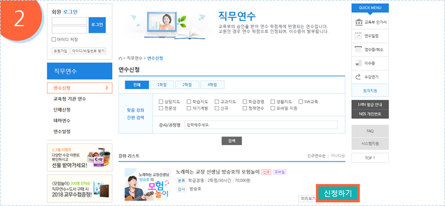
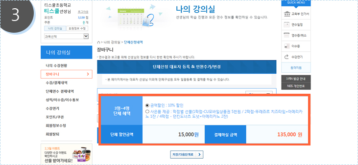

연수안내
홈 > 연수지원 > 연수안내
- 연수안내
- 신청방법
- 신청 시 유의사항
- 학습방법
- 평가방법
직무연수
- 교육과학기술부의 승인을 받아, 전국 유,초,중,고 교사 및 교육전문직(교장/교감 포함)의 승진평정과 연수학점제에 반영되는 연수입니다.
- 연수지명번호를 반드시 받으셔야 하며, 교원인 경우에 한해 신청 및 학점인정이 가능합니다.
(휴직교사, 기간제 교사 및 일반인은 연수신청은 가능하지만, 학점인정은 되지 않습니다.) - 직무연수 성적은 교육과학기술부 연수규정에 따라 산출되며, 연수종료 후 소속 교육청으로 통보됩니다.
- 이수기준에 진도율 및 ‘온라인평가 (시험/과제)등이 포함됩니다.
자율연수
- 자율연수는 학점인정이 되지 않습니다.
- 이수기준에 진도율(평가점수 80점 이상)시 수료증을 발급해 드립니다.
직무연수 인정 범위
연수생의 지명 및 수강절차
- 원격교육연수원의 교원 자격 및 직무연수는 반드시 사전에 연수지명번호를 지정받아 수강신청을 함.
다만 교원이 아닌 일반인 연수생은 연수원 규칙에 의거 자유롭게 수강함
-
원격연수와 집합연수의 중복허용 범위(예외적인 허용사항임)
-
평일 : 원격연수와 집합연수의 중복을 원칙적으로 허용하지 않음
단, 원격연수와 집합연수의 중복 시 연수기간이 짧은 연수의 기간을 기준으로 연수기간의 1/4이하인 경우에는 인정
예) 원격연수 3주, 집합(출석)연수 2주(10일)의 경우 중복허용 기간 2일
· 방학기간 : 원격연수와 집합(원격)연수 수강 시 2강좌 중복 허용
예) 원격연수 1강좌 + 집합(원격)연수 1강좌 = 2강좌 인정
* 참고 : 집합연수와 집합연수의 기간 중복 불인정(1강좌만 인정)
-
평일 : 원격연수와 집합연수의 중복을 원칙적으로 허용하지 않음
동일기간 중복 수강의 금지
- 평일연수는 원칙적으로 연수실적인정 대상 연수와 다른 연수의 기간 중복이 될 경우 연수실적으로 인정하지 아니함.
- 모든 연수 참가시 충실하게 연수를 수료할 수 있도록 연수기간이 중복되지 않도록 지명해야 함.
동일과정 재이수 여부
- 본 연수원에서 이수한 동일과정은 2~3년 이내에 재 이수하실 수 없습니다.
(각 교육청 별로 재이수할 수 있는 기간과 제한 조건이 다릅니다.) - 동일한 분야에 대한 연수과정이라도 연수기관, 연수제목이 다를 경우 수강이 가능합니다.
(연수 신청 전 해당 시도교육청에 문의하여 이수학점 인정여부를 확인하시기 바랍니다.)
연수지명번호
2007년 3월 1일 이후 '학교장 추천서' 폐지하고
학교별 「연수 지명 명부」를 비치하여 연수지명절차로 갈음하고
연수 이수 후에는 학교장이 연수이수증으로
연수인정 여부를 결정하게 변경되었습니다.
입력방법
- [나의 강의실] → 연수지명번호 입력/수정을 클릭하신 후 입력하시면 됩니다.
지명번호는 연수신청시~연수종료시까지 입력 및 수정이 가능합니다.
지명번호 취득방법
- 1. 교무부(교무부장) / 연구부(연구부장) 선생님께 연수관리대장 혹은 연수지명 명부를 요청합니다.
- 2. 연수자는 <연수지명 명부>에 연수내용과/기관/연수기간 등 관련사항을 기재합니다.
- 3. 이 과정에서 연수지명번호가 확정됩니다.
Ex) 서울교육청 - 성신여자중학교 인경우 => 서울-성신여중-년도-누적번호 - 4. 교육전문직의 경우 ‘서울-(동부청, 수원청, 연수원, 정보원, 단위부서명)-07-001’ 등의 형식으로 작성합니다.
- 5. 학교 “연수지명명부”에서 확정된 연수지명번호는 강좌 신청 시 입력합니다.
- 6. 신청 후~연수종료시까지 나의 강의실에서도 입력, 및 수정 가능합니다.
- 7. 연수 지명번호 부여 없이 연수를 실시했을 경우 연수이수 학점(성적) 및 승진규정상의 가산점이 불인정됩니다.
연수 지명 명부 서식(예시)
| 연번 | 직명 | 성명 (생년월일) |
지명번호 | 연수과정명 | 연수번호 | 연수시간 (기간) |
지명사유 | 결재 (교감확인) |
비고 | |
|---|---|---|---|---|---|---|---|---|---|---|
| 이수 | 미이수 | |||||||||
| 1 | 교감 | 이연수 (1955.8.1) |
서울-중광초-07-001 | 인사 행정과정 |
서울초등교육행정연구회 (특수분야연구) |
30시간 (1.15~1.19) |
인사행정 능력 향상 |
O | ||
| 2 | 교사 | 홍길동 (1956.2.12) |
부산-부산고-07-001 | 과학교과 심화연수 |
○○○ 원격연수원 |
60시간 (7.1~7.30) |
과학교과 전문성 신장 |
O | ||
| 3 | 장학사 | 김장학 (1942.2.25) |
충북-충북고-07-001 | 리더십 관리자과정 |
한국리더십개발연구회 (특수분야연구) |
30시간 (8.1~8.5) |
장학사의 업무수행 능력향상 |
O | ||
-
● 개인신청
-

-
- 1. 직무연수 / 자율연수에서 원하시는 연수를 선택하시어 결제를 진행해주세요.
- 2. 나의 강의실>나의 수강현황으로 접속하시어 학교에서 부여 받은 지명번호를 입력하시고 정보를 저장해주세요.
(지명번호가 없는 경우 [연수 지명번호가 없습니다.] 에 체크 후 정보를 저장해주세요.) - 3. 연수 시작일자에 접속하시어 수강해주세요.
-
● 단체신청 (장바구니로 신청)
-
-

- 1. 직무연수에서 원하시는 연수를 선택하시어 장바구니로 이동해 주세요.
- 2. [단체신청하기]버튼 클릭하시면 단체 구성원들의 아이디, 연수를 신청하실 수 있는 페이지로 이동합니다.
- 3. [인원추가] 버튼을 클릭하시어 구성원 아이디를 입력해주시고 각 아이디에 연수를 등록해주세요.
- 4. 연수 등록이 완료된 후에는 [저장/다음단계로] 버튼을 클릭 후 할인혜택을 선택하시고 결제를 진행해주세요.
- 5. 단체대표 결제 완료 후 구성원들은 나의 강의실>나의 수강현황으로 접속하시어 학교에서 부여 받은 지명번호를 입력하시고 정보를 저장해주세요.
(지명번호가 없는 경우 [연수 지명번호가 없습니다.] 에 체크 후 정보를 저장해주세요.) - 6. 연수 시작일자에 접속하시어 수강해주세요.
-
● 단체신청 (게시판으로 신청)
-
- 1. 직무연수>단체신청 페이지로 접속하시어 단체신청서를 다운로드 해주세요.
- 2. 단체신청서를 작성해주시고 게시판에 업로드 해주시면 신청서 확인하여 대표 선생님께 개별 연락 드립니다.
- 3. 연락을 통해 단체신청 혜택 및 결제방법 안내 후 연수비 입금이 완료되면 수강 등록이 진행됩니다.
- 4. 수강 등록 완료 후 단체 구성원들에게 안내 문자가 발송됩니다.
- 5. 문자 확인 후 나의 강의실>나의 수강현황으로 접속하시어 학교에서 부여 받은 지명번호를 입력하시고 정보를 저장해주세요.
(지명번호가 없는 경우 [연수 지명번호가 없습니다.] 에 체크 후 정보를 저장해주세요.) - 6. 연수 시작일자에 접속하시어 수강해주세요.
● 유의사항
연수대상
- - 전국 17개 시도교육청 소속 유, 초, 중등교사 및 교육 공무원
- - 휴직교사, 일반인은 연수를 수강할 수 있으나 학점은 인정되지 않습니다.
연수 기간 중복 허용
- - 같은 기간 동안 2개 이상 연수과정을 이수하여도 인정됩니다.
(2014년도 교원 연수 중점 추진 방향)
동일·유사 과정 중복
- - 강좌명이 동일·유사하여도 해당 연수과정표 등을 통해 과목의 70% 이상 다른 과정임을 증명할 경우 2강좌 모두 인정됩니다. (연수생 입증책임)
연수지명번호
- - 학교에 비치되어 있는 연수지명명부를 작성하시고 기재된 연수지명번호를 입력해주세요.
- - 연수지명번호는 연수종료 전까지 [나의 강의실]에서 수정하실 수 있습니다.
연수지명번호 자세히 보기
NEIS개인번호
- - 교육부 및 KERIS '원격교육연수 이수자 통보 업무 개선(2014.02)' 지침에 따라 NEIS 개인번호를 취합하고 있습니다.
- - NEIS 개인번호는 연수 결과 보고를 위해서만 사용되며 NEIS 번호를 잘못 입력하신 경우에는 등재되지 않습니다.
NEIS 개인번호 자세히 보기
;){kind=link}
● 수강 연기/취소/환불
수강 연기
- - 수강 연기 시에는 동일과정으로 연기 신청이 가능하며, 교육청 단체연수는 게시판으로만 신청이 가능합니다.
- - 수강 연기는 연수 종료일 전 총 3회 까지만 가능하며, 환불은 불가합니다.
- - 수강 연기 후에는 진도/과제/시험 응시 내역이 모두 초기화되오니 주의해주시기 바랍니다.
수강 연기 바로 가기
수강 취소/환불
- - 개강일로부터 7일 이내에 취소 가능합니다.
- - 교재를 받으신 경우 교재 반송 확인 후 환불이 진행됩니다.
NEIS 개인번호 자세히 보기
-
-
1. 로그인 후 사이버 강의실로 입장해주세요.
- - 방법1) 로그인 창 [과목선택] 클릭 → 사이버 강의실 입장
- - 방법2) [나의 강의실] 메뉴 → [강의실 입장하기] 클릭 → 사이버 강의실 입장
-
1. 로그인 후 사이버 강의실로 입장해주세요.
-
- 2. 나의 연수 일정과 평가 항목을 확인해주세요.

-
- 3. 수강하는 연수의 진도/시험/과제 제출 여부를 확인하신 후 연수 종료 기간 내 완료해주세요.

-
- 4. 이수 결과를 확인하시고 이수증을 출력해주세요.

-
참고사항
- 1. 연수는 수강 기간 내 자유롭게 학습하실 수 있으며, 진도는 매 차시 마다 누적되기 때문에 매일 접속하지 않으셔도 됩니다.
- 2. 1일 평균 학습시간은 1~2시간 정도입니다. (2~3강 정도가 적당합니다.)
- 3. 강의 교안은 다운로드용 파일 형태로 제공되며, 학습 영상에서 다운로드가 가능합니다.
- 4. 청강 기간은 연수 종료 후부터 1년까지로 추가로 학습하실 수 있습니다.
직무연수 평가 프로세스 직무연수 성적은 교육부 연수규정에 따라 산출됩니다.
연수시간별 평가 계획 1학점 과정
| 항목 | 배점 | 평가횟수 | 이수기준 | |
|---|---|---|---|---|
| 온라인평가 (100%) |
참여점수(진도) | 50점 |
진도율 80% 이상 & 시험 필수 응시 & 총점 60점 이상 |
|
| 시험 | 50점 | 1회 | ||
| 합계 | 100점 | |||
연수시간별 평가 계획 2학점 과정
| 항목 | 배점 | 평가횟수 | 이수기준 | |
|---|---|---|---|---|
| 온라인평가 (100%) |
참여점수(진도) | 30점 |
진도율 80% 이상 & 시험 필수 응시 & 과제 필수 제출 & 총점 60점 이상 |
|
| 시험 | 40점 | 1회 | ||
| 과제 | 30점 | 1회 | ||
| 합계 | 100점 | |||
연수시간별 평가 계획 4학점 과정
| 항목 | 배점 | 평가횟수 | 이수기준 | |
|---|---|---|---|---|
| 온라인평가 (100%) |
참여점수(진도) | 20점 |
진도율 80% 이상 & 시험 필수 응시 & 과제 필수 제출 & 출석고사 필수 응시 & 총점 60점 이상 |
|
| 시험 | 10점 | 1회 | ||
| 과제 | 10점 | 1회 | ||
| 오프라인 평가 (60%) |
출석시험(지필평가) | 60점 | 1회 | |
| 합계 | 100점 | |||
4학점 연수 성적분포 조견표
| 점수 | 백분율 | 점수 | 백분율 | 점수 | 백분율 |
|---|---|---|---|---|---|
| 100 | 2.0 | 93 | 6.2 | 86 | 5.7 |
| 99 | 2.6 | 92 | 6.6 | 85 | 5.1 |
| 98 | 3.2 | 91 | 6.8 | 84 | 4.5 |
| 97 | 3.8 | 90 | 7.0 | 83 | 3.8 |
| 96 | 4.5 | 89 | 6.8 | 82 | 3.2 |
| 95 | 5.1 | 88 | 6.6 | 81 | 2.6 |
| 94 | 5.7 | 87 | 6.2 | 80 | 2.0 |
상대평가 동점자 처리 기준
- 출석고사 점수
- 온라인 시험 점수
- 과제 점수
- 학습 진도율
- 발표 점수 순으로 점수가 높은 학습자부터 순위 배정
이수증 발급
- 이수증은 우편 발송되지 않으며, 온라인 발급을 원칙으로 합니다.
- 이수증은 [나의 강의실] > [성적/이수증/이수통보] 메뉴에서 확인이 가능합니다.
- 이수증 발급은 연수종료 후, 2일~5일 후 부터 발급이 가능합니다.
연수 결과 통보
- 연수 결과는 연수 종료 후 10일 이내로 각 시도교육청에 이수자 명단을 통보합니다.
- 이수통보 결과는 [나의 강의실] > [성적/이수증/이수통보] 메뉴에서 확인이 가능합니다.